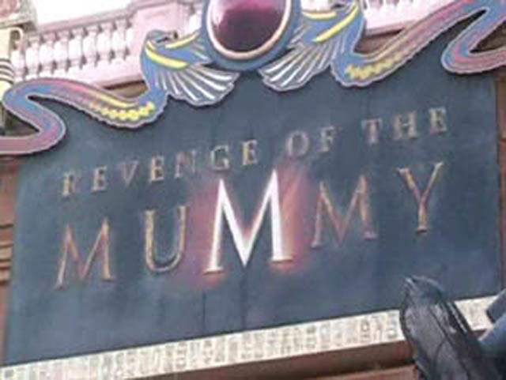

| |
Revenge of the Mummy Review

Today at the Universal Orlando Resort, we are here to ride and review Revenge of the Mummy in the Universal Studios Park. After wandering through the single riders line and seeing some nice Egyptian Theming, we reach the cars. We take a seat and pull down the big bulky lap bar. And now we are on our way. We start out by slowly touring a dark hallway when we hear some guy shout "GET OUT OF HERE!!! THE CURSE!!! IT'S REAL!!! THIS WHOLE PLACE IS A TRAP!!!!" Once we hear that, we get angry that we have been tricked and demand that we get our money back. But then we hear some hissing and growling and somebody says "Silence." He then replies with "With your souls, I shall rule for all eternity." Then some creepy music comes on as we wander on towards a brick wall. We then turn and stop. We are suddenly greeted with a pale white face. He says something and then the whole room lights up. But then it gets dark again and then we are greeted with fog, fire, and some mummy dudes popping up to scare little children on the ride. We are brought back into darkness with an evil laugh and more creepy music. We roll along, but then we suddenly stop. We then see a bunch of spiders crawl everywhere. This will bring quite a scream to all those with spiderphobia. But then, it happens. We start to go backwards! While we may not be going through much, we're going through it backwards and in the dark. So that makes it alot more interesting. Then we see some green fog. We hear more music and see some skulls fly by as we turn back around to face forewards. Though really, it would be so cool to go through the whole layout backwards. But oh well. We then start to climb a lifthill. But then we hear the evil guy shout "YOUR SOULS ARE MINE!!!!!" Right after he says that, we get LAUNCHED over the lifthill and we get some crazy ejector air as we are thrown over the top of the hill and down the first drop into the coaster section of the ride. I'm not sure what happens here, all I know that now all I can comprehend are darkness, flashes of light, spooky images, creepy soundtrack, fast turns, a lot of speed, and crazy ejector air. We then roll into the brake run and here a ride operator state "We hope you enjoyed your ride. Please keep your arms and legs..." Then she stops and light flashes. At this point, we realize that something is not right with this ride operator. After that "Oh Sh*t" moment, we fear that the Evil Millenium Force Ride Operator has come down to Florida to terrorize us all. But after hearing the sound of broken glass, we realize that it's the evil Mummy dude whose been trying to kill us!! Meh, close enough to my original theroy. He then shouts "PREPARE TO FORFEIGHT YOUR SOULS!!!!!" The room then lights up and fills up with fire. Evil Mummy Dude then shouts "DEATH IS ONLY THE BEGEINNING!!!!!" as we are launched into Part 2 of the ride. We then turn and see a flash of fire!!! I'm not sure what else happens during this part, but we see the evil guy's hand. But then we roll into the real brake run and then see the Archeologist who's then shouts "WHERE'S MY CUP OF COFFEE!!!!???" He gets his coffee, but is unfortunetly devoured by the evil Mummy. I would totally recommend riding this if you are at the Universal Orlando Resort. It's got great effects, a fantastic story, crazy ejector air, a funny coffee guy, and a single riders line. What's not to like?
8/10
Location: Universal Orlando Resort
Opened: 2004
Built by: Premier
Last Ridden: November 20, 2007
Revenge of the Mummy Photos
Home
|